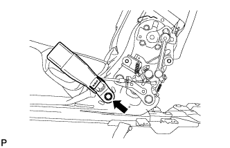
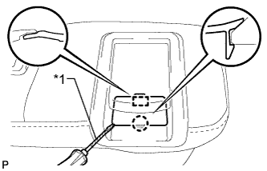
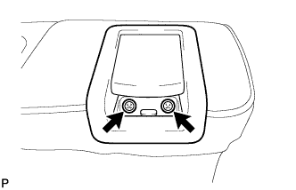
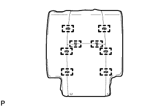

ЗАДНЕЕ СИДЕНЬЕ № 1 В СБОРЕ (выдвижное сиденье раздельного типа 60/40 с функцией облегчения посадки "Walk-in" с правой стороны) > РАЗБОРКА |
| 1. СНИМИТЕ ВЕРХНЮЮ ОТКИДНУЮ КРЫШКУ ПРАВОГО ЗАДНЕГО СИДЕНЬЯ |
С помощью отвертки освободите 3 захвата и снимите наладку.
| *1 | Защитная клейкая лента |
| 2. СНИМИТЕ РУЧКУ ОТПУСКАНИЯ ПРАВОГО РЕГУЛЯТОРА НАКЛОНА |
 |
Выверните 3 болта и снимите рукоятку.
| 3. СНИМИТЕ МОЛДИНГ ПОДУШКИ ПРАВОГО ЗАДНЕГО СИДЕНЬЯ |
С помощью съемника фиксаторов расцепите фиксатор.
С помощью съемника молдингов расцепите 3 захвата.
Переместите молдинг в направлении, указанном на рисунке стрелкой, чтобы отсоединить направляющую, и снимите молдинг.
| 4. СНИМИТЕ ЗАДНИЙ МОЛДИНГ ПОДУШКИ ЛЕВОГО ЗАДНЕГО СИДЕНЬЯ |
 |
Выверните винт.
С помощью съемника молдингов расцепите 3 захвата.
Освободите 2 направляющих и снимите молдинг.
| 5. СНИМИТЕ ЗАМОК РЕМНЯ БЕЗОПАСНОСТИ ПРАВОГО ЗАДНЕГО СИДЕНЬЯ № 1 В СБОРЕ |
|  |
Отверните болт и снимите замок ремня безопасности.
| 6. СНИМИТЕ ЗАМОК РЕМНЯ БЕЗОПАСНОСТИ ЗАДНЕГО СИДЕНЬЯ В СБОРЕ |
Отверните гайку и снимите замок ремня.
| 7. СНИМИТЕ КРЫШКУ ЗАЩЕЛКИ ЗАМКА СПИНКИ ПРАВОГО ЗАДНЕГО СИДЕНЬЯ |
 |
С помощью съемника фиксаторов освободите 3 фиксаторов и снимите щиток.
| 8. СНИМИТЕ ОБИВКУ ПОДУШКИ СИДЕНЬЯ ВМЕСТЕ С ПОДУШКОЙ |
Освободите крепления и снимите обивку подушки сиденья вместе с подушкой.
| 9. СНИМИТЕ ЭЛЕМЕНТ ЗАЩИТЫ ЗАДНЕГО СИДЕНЬЯ № 2 |
 |
Снимите 2 защитных элемента с подушки.
| 10. СНИМИТЕ КРАЕВОЕ УКРЕПЛЕНИЕ ПОДУШКИ ЗАДНЕГО СИДЕНЬЯ |
Снимите защитный элемент с пружины подушки.
| 11. СНИМИТЕ ОБИВКУ ПОДУШКИ РАЗДЕЛЬНОГО ЗАДНЕГО СИДЕНЬЯ |
 |
Снимите витковые пружины и обивку подушки сиденья с подушки сиденья.
| 12. СНИМИТЕ КОЛПАЧОК ПРАВОЙ РУЧКИ РЕГУЛЯТОРА НАКЛОНА |
|  |
С помощью отвертки расцепите захват и направляющую и снимите крышку.
| *1 | Защитная клейкая лента |
| 13. СНИМИТЕ РЫЧАГ ЗАМКА ПРАВОГО ЗАДНЕГО СИДЕНЬЯ В СБОРЕ |
|  |
Выверните 2 винта.
 |
Отсоедините трос в порядке, показанном на рисунке, и снимите рычаг.
| 14. СНИМИТЕ КРЫШКУ ОБИВКИ ЗАДНЕГО СИДЕНЬЯ |
 |
С помощью отвертки расцепите захват и направляющую и снимите крышку.
| 15. СНИМИТЕ РЫЧАГ ФИКСАЦИИ СПИНКИ ЦЕНТРАЛЬНОГО ЗАДНЕГО СИДЕНЬЯ |
 |
Выверните 2 винта.
Переместите рычаг в направлении, указанном на рисунке стрелкой, чтобы отсоединить направляющую, и снимите рычаг.
Освободите зажим троса и отсоедините трос от рычага.
| 16. СНИМИТЕ ОБИВКУ СПИНКИ ЗАДНЕГО СИДЕНЬЯ |
 |
С помощью отвертки освободите 4 захвата и снимите обивку.
| 17. СНИМИТЕ ПАНЕЛЬ ПОКРЫТИЯ СПИНКИ ПРАВОГО ЗАДНЕГО СИДЕНЬЯ В СБОРЕ |
 |
С помощью съемника фиксаторов расцепите 7 фиксаторов и снимите панель покрытия.
| 18. СНИМИТЕ ДЕРЖАТЕЛЬ ПОДГОЛОВНИКА ЗАДНЕГО СИДЕНЬЯ № 1 В СБОРЕ |
 |
Освободите 4 захвата и снимите 2 держателя.
| 19. СНИМИТЕ ОБИВКУ СПИНКИ СИДЕНЬЯ ВМЕСТЕ С ПОДУШКОЙ |
Снимите витковые пружины и освободите крепления, а затем снимите обивку спинки сиденья с подушкой.
| *1 | Крюк |
| *2 | Витковая пружина |
| 20. СНИМИТЕ ОБИВКУ СПИНКИ РАЗДЕЛЬНОГО ЗАДНЕГО СИДЕНЬЯ |
|  |
Снимите витковые пружины и обивку с подушки спинки сиденья.
| 21. СНИМИТЕ КРАЕВОЕ УКРЕПЛЕНИЕ СПИНКИ ЗАДНЕГО СИДЕНЬЯ |
Отсоедините защитный элемент от рамы спинки сиденья.
| 22. СНИМИТЕ ВНУТРЕННЮЮ ОТКИДНУЮ КРЫШКУ ПРАВОГО ЗАДНЕГО СИДЕНЬЯ |
Выверните 2 винта.
Отсоедините направляющую и снимите щиток.
| 23. СНИМИТЕ ПРАВУЮ ВНУТРЕННЮЮ КРЫШКУ РЕГУЛЯТОРА НАКЛОНА |
Выверните 2 винта.
Отцепите 2 захвата и снимите обивку.
| 24. СНИМИТЕ ПРАВУЮ ВНУТРЕННЮЮ КРЫШКУ РЕГУЛЯТОРА НАКЛОНА |
С помощью съемника фиксаторов расцепите фиксатор.
Переместите накладку в направлении, указанном на рисунке стрелкой, чтобы освободить 2 захвата, и снимите накладку.
| 25. СНИМИТЕ ПРАВУЮ ВНУТРЕННЮЮ КРЫШКУ РЕГУЛЯТОРА НАКЛОНА |
Освободите захват и направляющую и снимите накладку.
| 26. СНИМИТЕ ПРУЖИННЫЙ АМОРТИЗАТОР ПОДУШКИ ЗАДНЕГО СИДЕНЬЯ |
Отверните 2 гайки и снимите амортизатор.
| 27. СНИМИТЕ ТРОС УПРАВЛЕНИЯ НАКЛОНОМ ЗАДНЕГО СИДЕНЬЯ |
Обрежьте 3 бандажа жгута проводов.
Освободите 2 зажима троса и отсоедините трос, а затем снимите его.
| 28. СНИМИТЕ ТРОС УПРАВЛЕНИЯ НАКЛОНОМ ЗАДНЕГО СИДЕНЬЯ № 2 |
Освободите зажим троса и отсоедините трос, а затем снимите его.
| 29. СНИМИТЕ ПЛАСТИНУ ПОДУШКИ ЗАДНЕГО СИДЕНЬЯ |
 |
Отверните 2 гайки и снимите пластину.
| 30. СНИМИТЕ ПЛАСТИНУ ЗАМКА СПИНКИ ЛЕВОГО ЗАДНЕГО СИДЕНЬЯ |
Отцепите 2 зажима троса и отсоедините трос.
Отверните гайку и снимите стопорную пластину.
| 31. СНИМИТЕ РАМУ СПИНКИ ПРАВОГО ЗАДНЕГО СИДЕНЬЯ В СБОРЕ |
С помощью торцевого ключа "TORX" T45 выверните 4 болта "TORX" и снимите раму спинки сиденья.
| 32. СНИМИТЕ ОБИВКУ ЗАДНЕГО СИДЕНЬЯ |
 |
Выверните винт и снимите накладку.
| 33. СНИМИТЕ ПРУЖИНУ ПОДУШКИ ЗАДНЕГО СИДЕНЬЯ |
Освободите 2 крепления и снимите пружину.
| 34. СНИМИТЕ КАРКАС ПОДУШКИ ПРАВОГО ЗАДНЕГО СИДЕНЬЯ В СБОРЕ |
 |
Отверните 6 гаек и снимите раму подушки сиденья вместе с пластиной ножки сиденья.
| *1 | Пластина ножки сиденья |
| 35. СНИМИТЕ РУЧКУ РЕГУЛИРОВКИ НАПРАВЛЯЮЩИХ ПРАВОГО ЗАДНЕГО СИДЕНЬЯ |
 |
Снимите боковую раму подушки сиденья.
Сдвиньте направляющую в крайнее заднее положение.
С помощью небольшой отвертки прижмите стопор ручки, чтобы отсоединить захват, и снимите ручку регулировки.